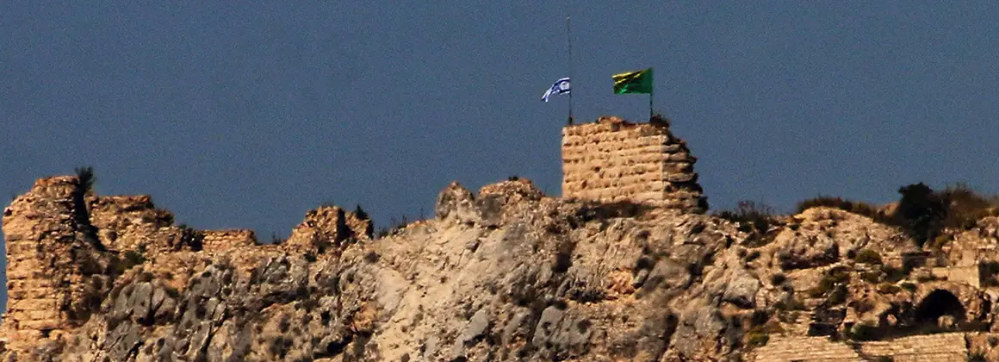

🧠 תמונת מצב
ניתוח גיאופוליטי
ישראל וחיזבאללה:
האם הלחץ הצבאי באמת עובד?
ניתוח משולב של INSS, CSIS ו-RUSI על יעילות האסטרטגיה הנוכחית, מגבלות הכפייה הצבאית, ומה נדרש כדי שהמצב הנוכחי יוביל לשינוי מבני אמיתי.
🧠
סינתזה של פוזיציה
מבוסס על 3 מכוני מחקר ו-32+ עמודי מחקר — מסוכם בשבילכם

מצודת בופור, דרום לבנון — Nathan Howard-Pool/Getty Images
מבוסס על מחקרים מ:
INSS
·
CSIS
·
RUSI
הבינו הכל תוך דקה
5 נקודות שחשוב לדעת לפני שמתחילים לקרוא
01
חיזבאללה נחלש — אך לא קרס. מנהיגות הוכחדה, יכולת הרתעה נפגעה, תמיכת השיעים ירדה. אך הארגון חוזר למודל גרילה שהוכיח את עצמו בעבר.
02
הלחץ הצבאי לבדו לא יפרק את הנשק. אם המדינה הלבנונית לא תמלא את החלל, חיזבאללה ינצל את חולשתה כטיעון להמשיך להתקיים.
03
ארה"ב תקועה בסתירה. לחזק את לבנון — מול הממשלה. להשיג שקט — מול חיזבאללה. לקדם הסכם — מול איראן. שלוש מטרות שמתנגשות.
04
מלחמת כטב"מים יוצרת אסקלציה עצמאית. המחזור של חדשנות ונגד-חדשנות מתנהל לפי ההיגיון שלו, לאו דווקא לפי אסטרטגיה פוליטית.
05
החלון ההיסטורי מצטמצם. ממשלה לבנונית חדשה, יישור קו בינלאומי נדיר, חיזבאללה מוחלש — אם ההזדמנות לא תנוצל עכשיו, לבנון עלולה לחזור לדפוסי 1982–2000.
מה השתנה?
חיזבאללה ב-2026: חלש יותר, אך לא שבור
מסעות ישראל ב-2024 וב-2026 הסבו נזק חמור: רוב המנהיגות הבכירה הוכחדה, רשתות המנהרות הושמדו, וכוח הרדואן צומצם. יכולת הרתעתו של הארגון — שעמדה בבסיס האסטרטגיה שלו מאז 2006 — נחשפה כמוגבלת.
אך חיזבאללה לא קרס. לפי RUSI, הארגון חזר לשורשיו כארגון גרילה, ואיראן פרסה מאות מפקדי משמרות המהפכה לשחזר ולארגן מחדש את המבנה — תוך מיזוג לוחמים סורים ועיראקים ביחידותיו.
שינוי אסטרטגי מפתח
חיזבאללה עבר מ"רתע עצמאי" ל"כוח תמיכה" — מתאם ירי לצד מתקפות ישירות של איראן. RUSI מציין שזהו שינוי עמוק: תפקידו האסטרטגי ירד, והמקרה לשמירת נשקו הכבד נחלש בהתאם.
במקביל, הממשלה הלבנונית החדשה — הנשיא עוון וראש הממשלה סלאם — הכריזה ב-2 במרץ 2026 על איסור פעילות צבאית של חיזבאללה. זו ההצהרה הנחרצת ביותר שממשלה לבנונית אי פעם ניסחה. אך הפער בין ההצהרה לבין יכולת האכיפה נותר עמוק.
איפה המכונים מסכימים?
נקודת הסכמה: הצבא לא מספיק
שלושת המכונים מסכימים על עיקרון מרכזי אחד: לחץ צבאי לבדו לא יפרק את חיזבאללה.
הבעיה אינה הנשק — היא היעדר המדינה. כל עוד המדינה הלבנונית אינה מסוגלת לספק ביטחון, שירותים ויציבות כלכלית לקהילות השיעיות בדרום, חיזבאללה תמשיך להציג את נשקה כהכרח הגנתי.
"אם המדינה לא תוכל לספק ביטחון, חיזבאללה ישרוד על ידי הפיכת חולשתה לטיעון המרכזי שלו."
RUSI, יוני 2026
כולם מסכימים גם שהחלון ההיסטורי הנוכחי הוא נדיר: יישור קו בינלאומי (ארה"ב, בריטניה, מדינות המפרץ), ממשלה לבנונית חדשה עם נכונות מוצהרת, וחיזבאללה מוחלש — שילוב שלא התקיים בדור האחרון.
איפה המכונים חולקים?
שלוש זוויות, שלוש מחלוקות
כאן מתגלה הפצל המשמעותי: עד כמה הלחץ הצבאי הנוכחי מסייע לתהליך, ועד כמה הוא פוגע בו?
RUSI — הסיכון הנרטיבי
ישראל ניצחה בסיבוב הצבאי, אך ייתכן שמפסידה במאבק על התודעה. תיעודים על שמד בתים בדרום לבנון, לצד פעולות ישראליות מעבר לאזור החיץ שהיא עצמה הכריזה עליו, מחזקים בדיוק את הסיפור שחיזבאללה מספר: "המדינה לא יכולה להגן עליכם."
INSS — הדילמה האמריקאית
הבעיה המרכזית אינה ישראל — היא ארה"ב. וושינגטון מנסה לחזק את לבנון, לרסן את חיזבאללה ולהגיע להסכם עם איראן בו-זמנית. כשישראל תוקפת, ארה"ב נדרשת להגיב — ואיראן מנצלת את הפחד האמריקאי מאסקלציה כמנגנון לבלום את ישראל.
CSIS — שאלת "היום שאחרי"
מה בעצם פירוש פירוק נשק? אף תוכנית אמינה לא קיימת לחרמת כלי נשק קלים מבתים פרטיים בקהילות שיעיות. הניסיון של ה-IRA בצפון אירלנד וה-FARC בקולומביה מלמד: פירוק מצליח מחייב מעורבות פוליטית, לא כפייה בלבד.
שלוש הזוויות אינן סותרות זו את זו — הן משלימות. ישראל זקוקה לרסן צבאי כדי לא לחתור תחת המדינה שתאמור לירש את החלל. ארה"ב זקוקה להגדיר כללי הפרדת זירות. ולבנון זקוקה לתוכנית פוליטית, לא רק לנוכחות צבאית.
מה המשמעות?
שני תרחישים — ובניהם פחות זמן ממה שנדמה
המחקרים מצביעים על שני קצוות אפשריים.
התרחיש הגרוע: לבנון כ"גזה שנייה" — מדינה שנחרבה מספיק כדי שאף גוף לא יוכל לשלוט בה. RUSI מזכיר את אזור הביטחון 1985–2000 כאזהרה: כיבוש ממושך שסייע לבנות את חיזבאללה, לא לרסקו.
התרחיש האופטימי: מסגרת DDR (פירוק, פיצול, ריאינטגרציה) מדורגת — תחילה הנשק האסטרטגי בדרום, לאחר מכן שלבים לכיוון צידון, בקעה ופרברי ביירות — בליווי השקעה מקבילה בכוחות ביטחון אזרחיים, לא רק בצבא.
מסקנה מרכזית
הזדמנות של דור — אם לא תנוצל בחודשים הקרובים, לבנון עלולה לשוב לאותה מערכת שיצרה את חיזבאללה מלכתחילה. לא בגלל שהמצב הצבאי ישתנה — אלא בגלל שהחלון הפוליטי ייסגר.
מה לעקוב אחריו?
4 אינדיקטורים קריטיים
🔵
מנדט אוניפי"ל — פוקע סוף 2026
האם יוסכם מנגנון ניטור חלופי לפני שאוניפי"ל יסתלק? הפער בין נסיגתה לבין כל הסדר חלופי הוא "הזדמנות של חיזבאללה להתחדש" — לפי RUSI.
🔵
יכולת משרד הרווחה הלבנוני לאזורי הדרום
האם המדינה תוכל לספק סיוע מזומן ישיר לקהילות בדרום? זה "החלון האמיתי" — כל עוד חיזבאללה ממלא את החלל הכלכלי, ציד הנשק לא ייצא מן הכוח אל הפועל.
🔵
כללי הפרדת זירות — ישראל מול ארה"ב
האם ישראל תקבל הבנה שתגובה ממוקדת להפרות חיזבאללה לא תיחשב כהפרת המסגרת הדיפלומטית עם טהרן? ללא הסכם כזה, איראן תמשיך לנהל את ה-veto דרך לבנון.
🔵
עמדות איראן בשיחות לוצרן
האם טהרן תסכים להוצאת IRGC מלבנון כחלק מהסכם רחב עם ארה"ב, או תעדיף לשמור את לבנון כ"קלף" מיקוח אחרון?
פיזור נקודות מבט
סינתזה זו מאגדת מכונים המייצגים גישות שונות: INSS (ישראל — מנקודת מבט ביטחונית-ישראלית), CSIS (ושינגטון — ניתוח ממוקד בידועה של ארה"ב) ו-RUSI (בריטניה — ביקורתי יחסית כלפי הגישה הצבאית). ביחד הם מציעים תמונה שלמה יותר מכל מקור בנפרד.
ביקורתי 40%
מרכז 34%
תומך 26%
RUSI — ביקורתי
CSIS — מרכז
INSS — תומך
מקורות המחקר
INSS
Eldad Shavit, Orna Mizrahi
The test of the Lebanese arena from the perspectives of the United States, Iran, Lebanon, Hezbollah, and Israel
יוני 2026
קרא את המקור ←
CSIS
Paul Salem
Lebanon in the Shadow of the U.S.-Iran MOU: Risks and Opportunities
יוני 2026
קרא את המקור ←
RUSI
Alexander King
Hollowing Out Lebanon: How Pressure on Hezbollah Could Save It
יוני 2026
קרא את המקור ←
ניתוחים נוספים
🧠 תמונת מצב · בקרוב
ישראל ואיראן: מה הושג מהמו"מ בלוצרן?